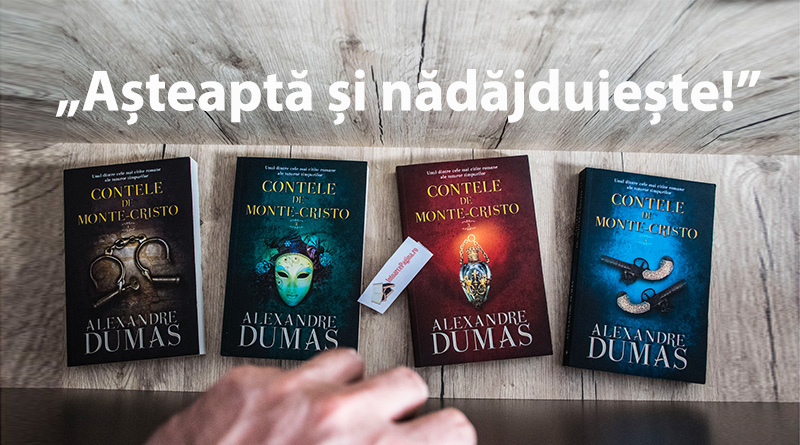

Unele cărţi sunt doar clasice, adică de neînlocuit. Din ele sunt inspirate unele din cele mai cunoscute filme şi despre ele sunt scrise mii de cuvinte, aşa cum sunt înţelese de mii de generaţii. Aceste opere şi-au ţesut un drum atât de fin în cultura fiecărui popor, încât parcă au fost mereu acolo. Dar, următoarele cărţi sunt considerate ″clasice″ din motive întemeiate. Autorii lor sunt maeştri în meşteşugul lor, care te agăţă, care nu te obligă să citeşti, însă tu vei continua să o faci până când vei termina lectura, moment care te va schimba pentru totdeauna.
Poate crezi că ştii povestea, poţi crede că ştii ce se întâmplă, dar crede-mă, cărţile astea merită toată
dragostea. Citeşte-le din nou doar pentru plăcere,
dăruieşte-le unui adolescent care nu le-a citit încă sau dacă nu te-ai apucat niciodată să le citeşti,
atunci apucă-te imediat!
1. ″Mândrie şi prejudecată″ de Jane Austen
2. ″Portretul lui Dorian Gray″ de Oscar Wilde
3. ″Marele Gatsby″ de F. Scott Fitzgerald
4. ″Mizerabilii″ de Victor Hugo
5. ″Jane Eyre″ de Charlotte Brontë
6. ″Băiatul în pijama cu dungi″ de John Boyne
7. ″Să ucizi o pasăre cântătoare″ de Harper Lee
8. ″Jurnalul unei tinere fete″ de Anne Frank
9. ″Romeo şi Julieta″ de William Shakespeare
10. ″Harry Potter şi piatra filosofală″ de J.K. Rowling
După părerea mea, cel mai frumos roman clasic pe care l-am citit până acum este ″Contele de Monte-Cristo″ de Alexandre Dumas. Cartea, deşi este publicată
în anul 1844, prezintă o poveste ce poate avea la bază un sâmbure de adevăr, dar care este presărata de o multitudine de elemente fantastice.
Edmond Dantes, protagonistul, poate fi oricare dintre noi, iar trăirile lui pot fi experimentate de fiecare om, indiferent de perioada în care trăieşte.
Romanul prezintă atât teme precum prietenia, dragostea, fericirea puerilă, dar şi teme mai întunecate precum răzbunarea, moartea, trădarea.
″Nu există nici fericire, nici nenorocire pe lume, există doar compararea unei stări cu cealaltă şi atâta tot. Doar cel care a simțit nefericirea cea mai cumplită
e în stare să simtă cea mai mare fericire.″
Contele de Monte-Cristo
